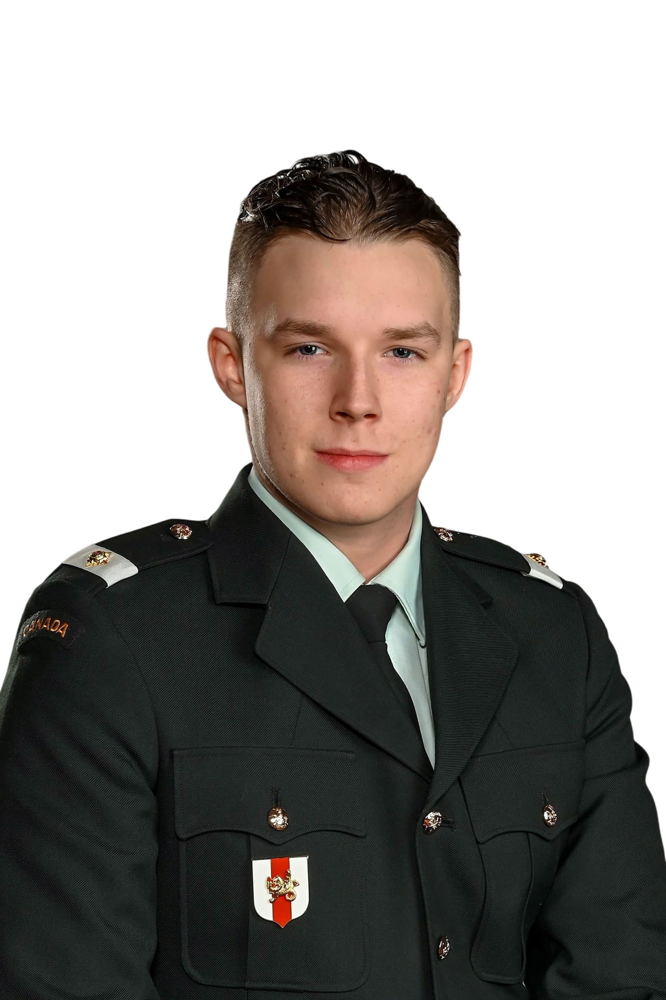

{kind=link}
Mason
Clement
• Mi'kmaq First Nation
• Future Electrician
• Former CAF Member

About Me
I was born and raised in a small First Nations community situated
along the border of Quebec and New Brunswick, where I developed a
strong appreciation for community, culture, and service from an
early age. Growing up in a close-knit environment instilled in me
the values of hard work, resilience, and responsibility—principles
that continue to guide both my personal and professional life.
In
2023, I graduated from high school and began my professional
career at my local community radio station.
Following in the footsteps of both my mother and grandfather, I
proudly continued my family's legacy as a radio host. Working in
community broadcasting allowed me to strengthen my communication
skills, build confidence in public speaking, and develop the
ability to engage with diverse audiences while contributing to an
important community service. This experience reinforced the
importance of clear communication, professionalism, and
representing my community with integrity.
While I
valued my work in broadcasting, I had long aspired to serve my
country through military service. After careful consideration, I
enlisted in the Canadian Armed Forces in 2024 and was selected to
participate in the Indigenous Leadership Opportunity Year (ILOY)
at the Royal Military College of Canada. This intensive leadership
and academic program challenged me to grow both personally and
professionally. Throughout my training, I developed strong time
management and organizational skills, learned to perform
effectively under pressure, maintained composure in demanding
environments, and gained valuable experience working
collaboratively within diverse teams to accomplish shared
objectives. The program strengthened my discipline, adaptability,
and commitment to continuous self-improvement.
During
my time in the military, I also reached an important personal
milestone by marrying my wife, whom I first met during the
COVID-19 pandemic in 2020. Her unwavering support has been a
constant source of motivation throughout every stage of my
journey, and together we have continued to build a strong
foundation for our future.
Following my release from
the Canadian Armed Forces in 2025, I began pursuing a career in
the skilled trades, recognizing the vital role tradespeople play
in building and maintaining Canada's infrastructure. Drawn to the
electrical trade for its technical complexity, problem-solving
opportunities, and long-term career potential, I committed myself
to becoming a 309A Construction and Maintenance Electrician.
To
strengthen my qualifications and improve my employment
opportunities, I enrolled in the Pre-Apprenticeship Electrician
Program at the Skilled Trades College of Canada in 2026. The
program provided practical hands-on training while expanding my
understanding of electrical theory, safety regulations, industry
standards, and workplace best practices. Through this experience,
I further developed my technical abilities, work ethic, and
readiness to enter the electrical industry as an apprentice.
Today,
I remain committed to continuous learning and professional
development. Alongside pursuing apprenticeship opportunities, I am
completing online courses, earning industry-recognized
certifications, and actively expanding my professional portfolio.
My goal is to continually improve my knowledge and skills while
preparing for the next chapter of my career. Whether serving my
community through broadcasting, my country through military
service, or contributing to Canada's infrastructure as an
electrician, I have consistently embraced new challenges with
determination, discipline, and a desire to make a meaningful
impact.
Skills
Below, I have broken my skills up into different . Each category highlights the specific abilities and expertise I have developed through my experiences in various fields.
Trade & Technical
Leadership & Discipline
Digital & Communication
Other Skills
Languages
Timeline
Hover or tap a milestone to see more.
Certificates
Take a look at some of my most recently uploaded certificates and credentials. View All →
Projects
Things I've built and shipped.
Watillery
A Family business that I had the opportunity to work with. Fully electronic water guns and aquatic toys.
watillery.com ↗Elements
An interactive periodic table of the elements. I made this during a college Chemistry course.
masonclement.com/elements →WW2 Leaders
A history reference project featuring key figures from World War II. This project was a part of my final assignment in a Political Science class in College.
masonclement.com/ww2-leaders →Contact
Open to apprenticeship and entry-level electrical opportunities. As well as web development and other digital work. Please feel free to reach out to me with any questions, inquiries, or opportunities.